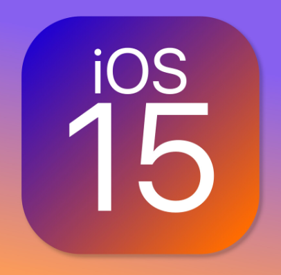
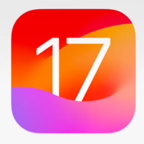
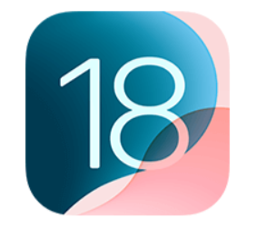

iOS 15 (2021)
Enfoque principal: Comunicación y concentración
FaceTime mejorado
Audio espacial. Aislamiento de voz. Modo retrato en videollamadas. Enlaces de FaceTime para Android y Windows (gran cambio estratégico).
Modo Concentración (Focus Mode)
Evolución del “No molestar”. Permite crear perfiles personalizados (trabajo, estudio, personal). Sincronización automática entre dispositivos Apple.
Live Text
Reconocimiento de texto en imágenes. Copiar números, direcciones y texto desde fotos. Funciona con cámara en tiempo real.
Privacidad
Mail Privacy Protection. Informe de privacidad de apps. Procesamiento más fuerte en el dispositivo.
Otras mejoras
Notificaciones rediseñadas. Mapas con más detalle (3D). Safari rediseñado.
Impacto: Gran paso en privacidad y productividad.
iOS 16 (2022)
Enfoque principal: Personalización y seguridad
Pantalla de bloqueo totalmente nueva
Widgets en la pantalla de bloqueo. Tipografías personalizables. Fondos con efecto profundidad. Múltiples pantallas configurables.
Mensajes
Editar mensajes enviados. Deshacer envío. Marcar como no leído.
Seguridad avanzada
Lockdown Mode (protección extrema contra spyware). Passkeys (inicio de sesión sin contraseña).
Inteligencia visual
Recorte automático de sujetos en fotos. Mejoras en reconocimiento de imágenes.
Impacto: La personalización más grande desde iOS 7.

iOS 17 (2023)
Enfoque principal: Interacción inteligente
StandBy Mode
Convierte el iPhone en pantalla inteligente al cargarlo horizontalmente. Muestra reloj, widgets y fotos.
NameDrop
Intercambio de contactos acercando dos iPhones. Funciona también con Apple Watch.
Widgets interactivos
Ya no solo muestran información: permiten interactuar sin abrir la app.
Mejoras en autocorrección
Nuevo modelo de lenguaje predictivo. Mejor teclado.
Salud mental
Seguimiento del estado de ánimo. Funciones de bienestar emocional.
Impacto: Más integración cotidiana y funciones inteligentes.

iOS 18 (2024)
Enfoque principal: Inteligencia Artificial y personalización profunda
Apple Intelligence (IA integrada)
Generación de texto inteligente. Resúmenes automáticos de correos y notificaciones. Edición inteligente de fotos. Siri mucho más contextual y natural.
Personalización avanzada
Iconos reposicionables libremente. Cambiar colores de iconos. Centro de control más configurable.
Privacidad reforzada
IA procesada en el dispositivo. Mayor control de permisos por app.
Mejoras técnicas
Optimización de batería. Mayor eficiencia en chips Apple Silicon. Mejor integración con ecosistema Mac y iPad.
Impacto: La mayor actualización desde iOS 7 en términos de funciones inteligentes.
iOS 26
iOS 26 fue anunciado el 9 de junio de 2025 en la WWDC y lanzado oficialmente el 15 de septiembre de 2025. Su predecesor fue iOS 18, y su número de versión refleja el año de lanzamiento en lugar de una secuencia numérica estándar. Esta versión introdujo el nuevo lenguaje visual “Liquid Glass”, integración más profunda de Apple Intelligence y múltiples mejoras en comunicación, seguridad y usabilidad. Entre sus principales características, funcionalidades, controles y novedades están:
Diseño Liquid Glass
Nuevo estilo visual con transparencias y efectos de cristal translúcido que aportan profundidad a controles, menús y widgets en todo el sistema. Apple Intelligence ampliado: Integración de IA del sistema para funciones como traducción en tiempo real, resúmenes contextuales y acciones predictivas.
Privacidad reforzada
IA procesada en el dispositivo. Mayor control de permisos por app.